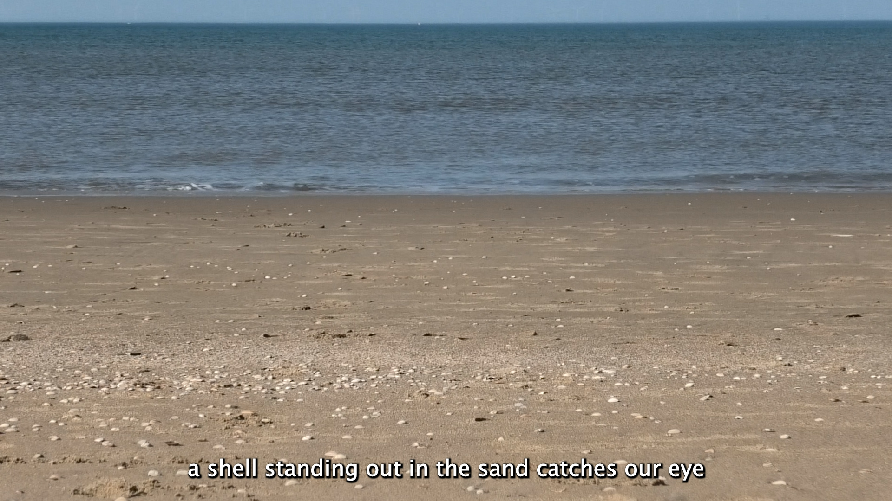
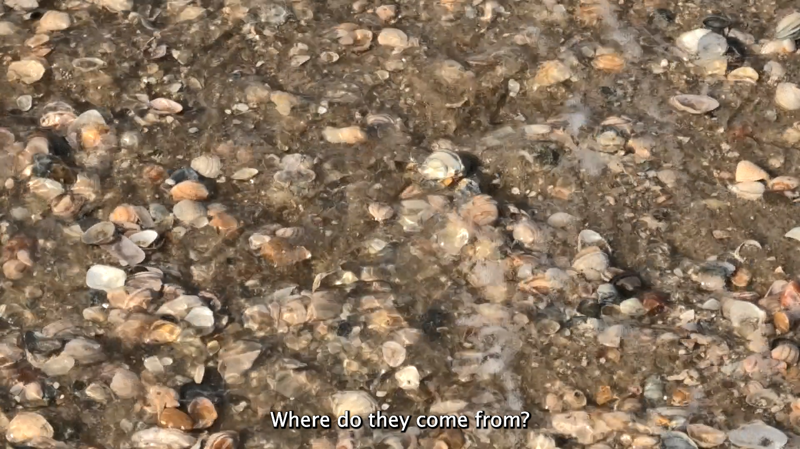
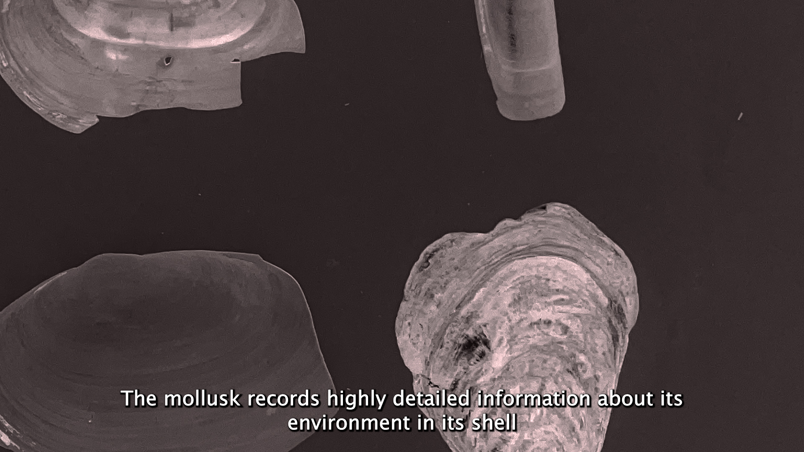
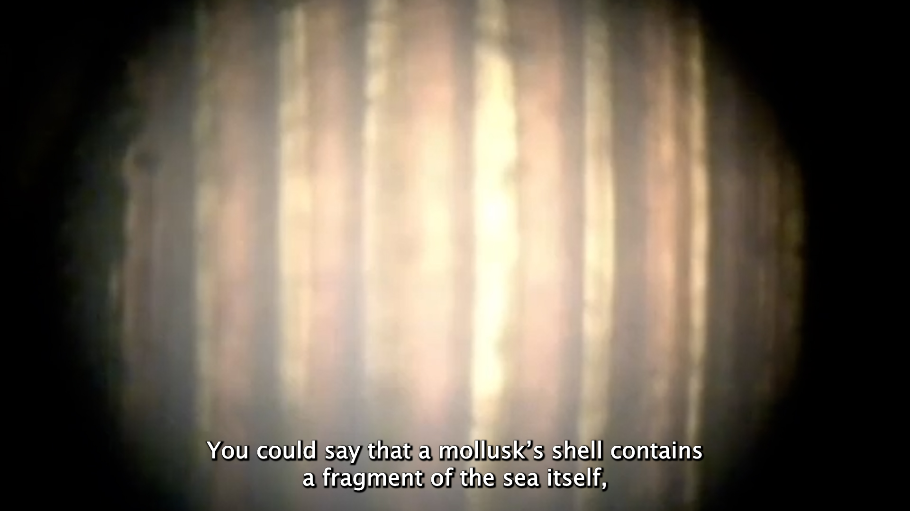
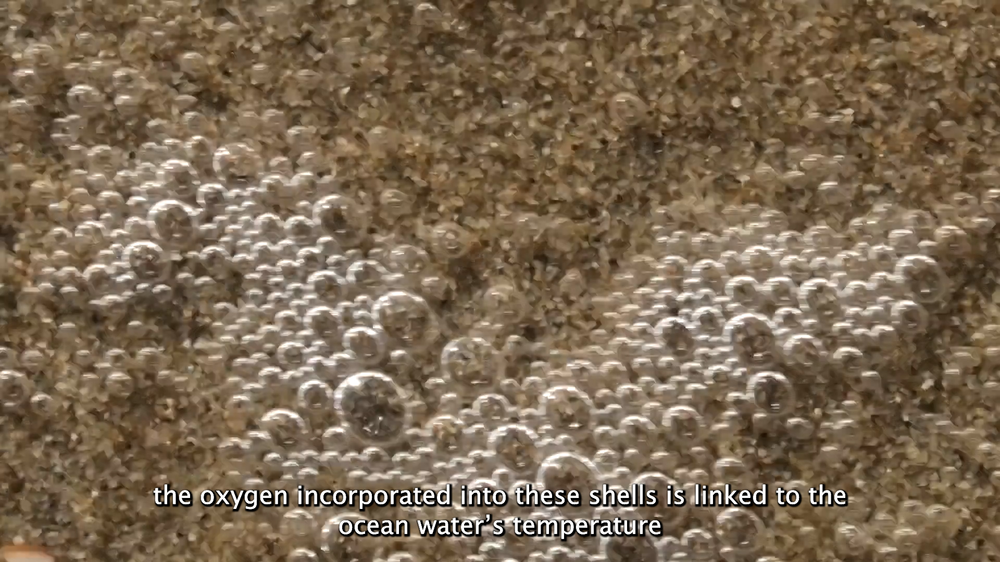
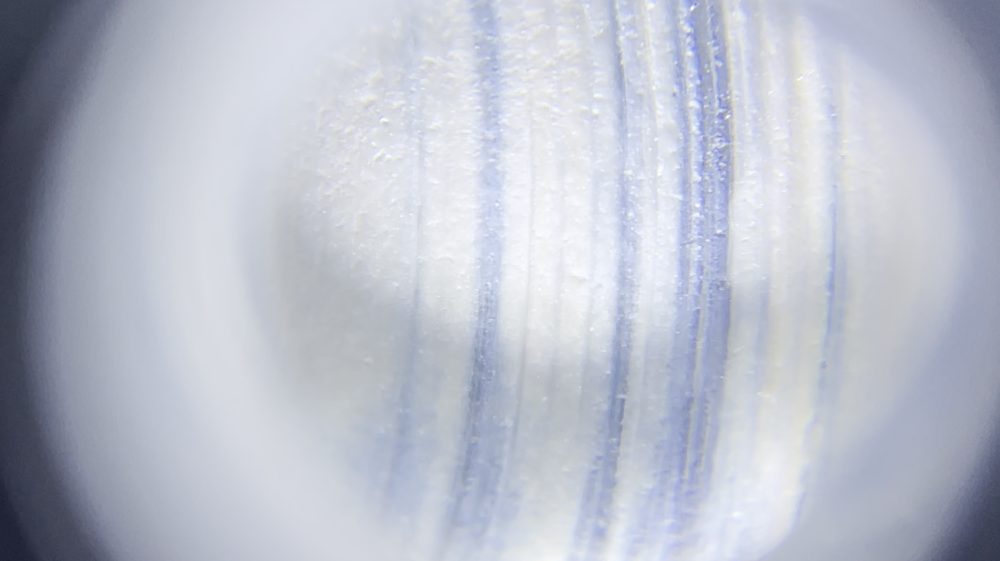
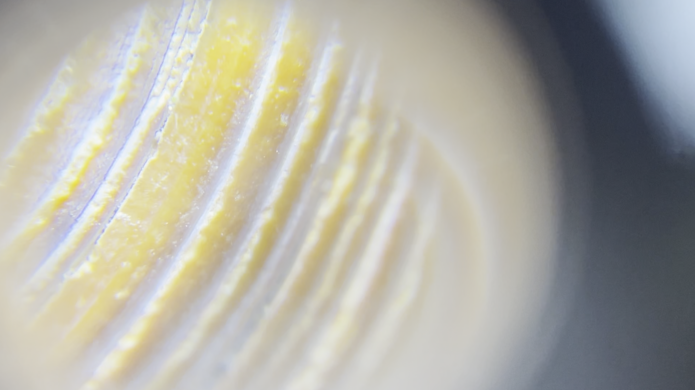
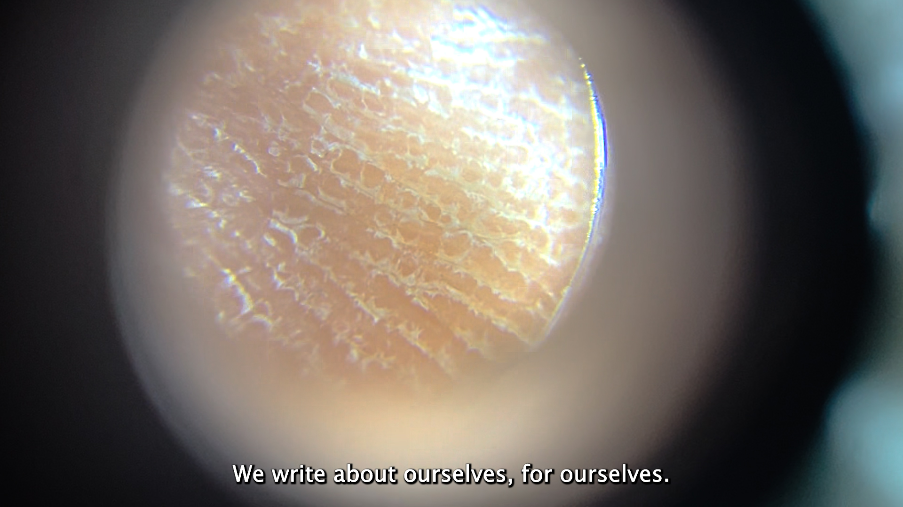
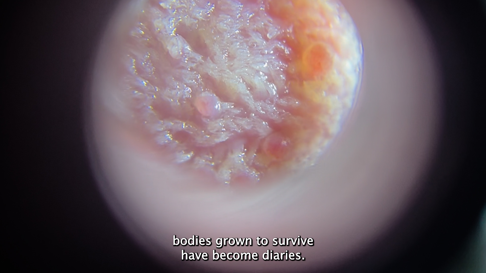
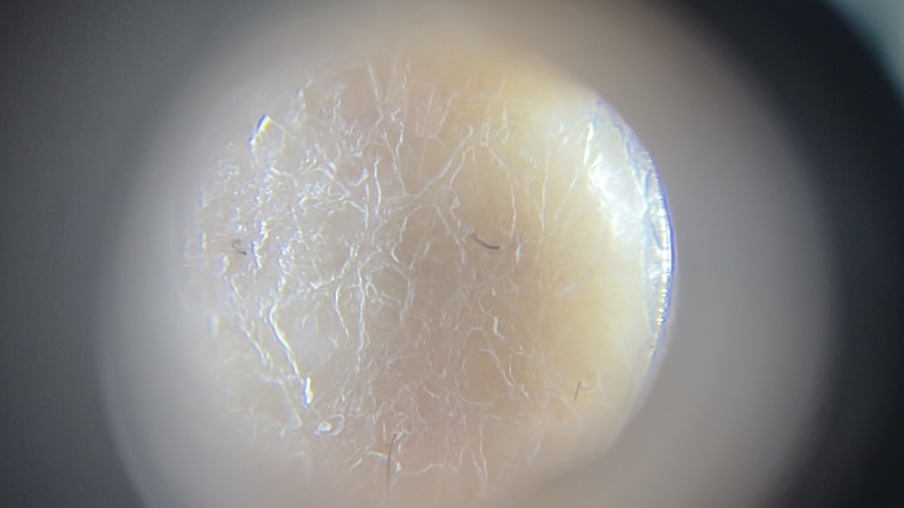

Synopsis
Anatomia di un Diario is a video essay developed in collaboration with paleoclimatologist Dr. Niels de Winter.
The film explores the ability of mollusk shells to archive information about the environments in which they lived. Through their growth layers, shells preserve traces of past ocean conditions and climate, turning the experience of an individual organism into a record of systems vastly larger than itself, extending across geological timescales. The movie reflects on this shift in scale: how a body, shaped by its immediate surroundings and the need to survive, can accumulate information about the wider world. What begins as the record of an individual life can, millions of years later, become a piece through which reconstruct the history of the Earth.









